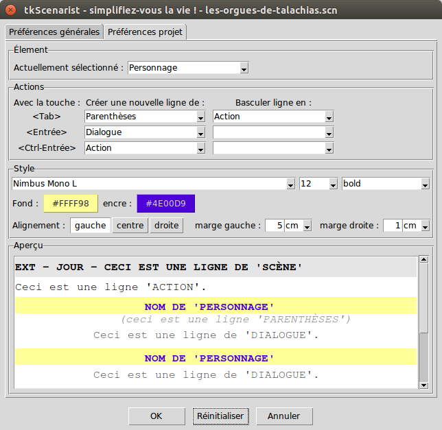

Retourner au sommaire.
Cet outil permet de régler plus finement le comportement de l'éditeur
de texte spécifique de l'onglet Scénario de l'application.
Il se compose de trois sections principales :
Préférences générales et d'un onglet Préférences projet, qui vous
permettent de choisir où vous voulez appliquer vos réglages ;Dans cet outil, les zones ne sont pas redimensionnables.
ATTENTION : il est fortement recommandé de bien prendre connaissance de la documentation concernant l'onglet 'Scénario' avant de vous lancer dans des réglages hasardeux.
Notre équipe ne prend pas en charge de support concernant les résultats inattendus qui pourraient survenir suite à une mauvaise utilisation de cet outil. La lecture attentive de la page ici présente devrait résoudre la plupart de vos problèmes.
Retourner au sommaire.
La barre d'onglet vous permet de choisir où vous voulez appliquer vos réglages.
Retourner au sommaire.
Cliquez sur l'onglet Préférences générales pour appliquer vos
réglages à l'ensemble des projets futurs que vous produirez à partir de
là.
En effet, si vous validez vos réglages grâce au Bouton 'OK' situé tout en bas de l'outil, vos nouveaux choix seront
conservés dans la mémoire du logiciel d'une session sur l'autre, ce qui
signifie que vous n'aurez pas besoin d'effectuer ces réglages à nouveau
à chaque fois que vous lancerez tkScenarist.
ATTENTION : si vous avez un projet ouvert ou déjà en cours, ce
sont les réglages des Préférences projet qui ont la priorité sur
les réglages généraux. Vous risquez donc de ne pas voir immédiatement
le résultat de vos changements.
Pour voir vos nouveaux réglages généraux, sauvegardez le projet en
cours, puis utilisez soit le menu Projet > Nouveau, soit le raccourci
clavier <Ctrl-N> correspondant au couplage successif des touches
Ctrl (en bas à gauche ou à droite de votre clavier) et N du clavier
alphanumérique.
Pour revenir aux réglages d'usine (par défaut), cliquez sur le
Bouton 'Réinitialiser' situé tout en bas de l'outil,
puis cliquez sur le Bouton 'OK', sauvegardez le projet
en cours, puis utilisez soit le menu Projet > Nouveau, soit le
raccourci clavier <Ctrl-N> correspondant au couplage successif des
touches Ctrl (en bas à gauche ou à droite de votre clavier) et N du
clavier alphanumérique.
Retourner au sommaire.
Cliquez sur l'onglet Préférences projet pour appliquer vos réglages
uniquement au projet en cours de production.
Ces réglages seront conservés dans le fichier du projet lui-même la
prochaine fois que vous sauvegarderez le projet (voir plus bas) et ils seront restaurés la prochaine fois que vous
ouvrirez de nouveau ce même fichier de projet (menu Projet > Ouvrir
ou raccourci clavier <Ctrl-O>).
Les préférences projet ont toujours la priorité sur les préférences générales. Chaque fois que vous ouvrez un fichier projet, ce sont les réglages que ce fichier contient qui prennent le dessus sur les réglages généraux en cours. Ne vous laissez donc pas surprendre.
Pour revenir aux préférences générales actuelles, cliquez sur le Bouton 'Réinitialiser' situé tout en bas de l'outil, puis cliquez sur le Bouton 'OK' et enfin sauvegardez le projet en cours (voir plus bas).
Retourner au sommaire.
La section 'Enchaînements' vous permet de régler les enchaînements d'éléments de scénario en mode 'Switch' et en mode 'Create' (voir Onglet 'Scénario' pour plus de détail).
Retourner au sommaire.
L'encadré 'Élément' affiche en premier lieu l'élément de scénario actuellement sélectionné.
Vous pouvez sélectionner un élément de scénario soit en cliquant sur le bouton situé à droite de la liste déroulante et en choisissant un élément dans la liste qui s'affiche, soit en cliquant directement sur un élément de scénario se trouvant dans la zone de texte de l'encadré 'Aperçu'.
Retourner au sommaire.
L'encadré 'Actions' affiche tous les enchaînements correspondant à l'élément de scénario actuellement sélectionné dans l'encadré 'Élément'.
Pour bien comprendre le fonctionnement de cet outil, prenons un exemple.
Supposons que l'élément de scénario Personnage soit actuellement
sélectionné (voir illustration ci-dessus).
Dans l'encadré 'Actions', nous voyons qu'il est indiqué (par exemple) :
« Avec la touche : <Tab>, Créer une nouvelle ligne de :
Parenthèses et Basculer ligne en : Action. »
Qu'est-ce que cela signifie concrètement ?
Lorsque le curseur d'insertion de l'éditeur de texte spécifique de
l'onglet Scénario de l'application se trouve sur une ligne
correspondant à l'élément Personnage, le fait d'appuyer sur la touche
<Tab> de tabulation du clavier provoque les enchaînements
suivants :
Personnage N'EST PAS vide, ajouter une nouvelle ligne
en-dessous, qui correspondra à l'élément Parenthèses (mode
'Create') ;Personnage EST vide, changer cette ligne Personnage
actuelle de sorte qu'elle devienne une ligne qui corresponde à
l'élément Action (mode 'Switch') ;Cela revient à adopter le comportement intuitif suivant : lorsque
je tape du texte dans mon onglet Scénario, si j'arrive sur une ligne
Personnage, je peux avoir comme alternative de transformer cette
ligne en une ligne Action, en pressant la touche <Tab> (et si la
ligne est vide) ou alors je peux immédiatement passer à la ligne
suivante, qui sera une ligne Parenthèses, toujours en pressant la
touche <Tab> et si ma ligne Personnage contient déjà un nom de
personnage.
Ce fonctionnement est similaire pour la touche <Entrée> (retour
chariot) du clavier, ainsi que pour la combinaison de touches
<Ctrl-Entrée> du clavier.
Dans l'illustration ci-dessus, nous pouvons lire à peu
près ceci : lorsque je tape du texte dans mon onglet Scénario,
si j'arrive sur une ligne Personnage et que je presse la touche
<Entrée>, alors que ma ligne est vide, il ne se passera rien
(« Basculer ligne vers : rien ») ou alors, si je presse la touche
<Entrée> et que ma ligne Personnage contient déjà un nom de
personnage, je peux immédiatement passer à la ligne suivante, qui sera
alors une ligne Dialogue.
De même, dans l'illustration ci-dessus, nous pouvons
lire à peu près cela : lorsque je tape du texte dans mon onglet
Scénario, si j'arrive sur une ligne Personnage et que je presse la
combinaison de touches <Ctrl-Entrée>, alors que ma ligne est vide,
il ne se passera rien (« Basculer ligne vers : rien ») ou alors, si
je presse <Ctrl-Entrée> et que ma ligne Personnage contient déjà un
nom de personnage, je peux immédiatement passer à la ligne suivante,
qui sera alors une ligne Action.
Pour modifier un enchaînement ou un autre, cliquez sur la liste déroulante de l'action que vous souhaitez modifier, puis sélectionnez un élément de scénario dans cette liste.
Si vous sélectionnez la ligne blanche qui se trouve en tout premier choix dans ces listes déroulantes, cela correspond à l'action « ne rien faire » (si je presse sur la touche concernée, ne rien faire).
Prenez bien soin de vérifier vos nouveaux enchaînements : certains cas peuvent conduire à des impasses, qui risquent par la suite de carrément bloquer le bon déroulement de la rédaction de votre texte de scénario.
En cas de gros souci, vous pouvez toujours débloquer la situation en réinitialisant tout d'abord les préférences générales et ensuite les préférences projet, dans cet ordre-là et cet ordre-là seulement.
Retourner au sommaire.
La section 'Styles' vous permet de régler l'aspect visuel de chaque élément de scénario (voir Onglet 'Scénario' pour plus de détail).
Retourner au sommaire.
L'encadré 'Style' permet de choisir la police de caractères ainsi que diverses mises en forme à appliquer à l'élément de scénario actuellement sélectionné dans l'encadré 'Élément'.
Un élément de scénario étant avant tout un paragraphe, toutes les mises en forme que vous choisirez ne pourront s'appliquer qu'à l'ensemble du paragraphe, indistinctement, et non pas à certains mots du paragraphe.
À l'heure actuelle, l'encadré 'Style' permet d'appliquer les mises en forme suivantes :
la police de caractères : choisissez la police de caractères qui vous convient le mieux, pour l'élément de scénario actuellement sélectionné, en cliquant sur la liste déroulante puis en cliquant sur l'élément de liste approprié ;
la taille de la police de caractères appliquée : choisissez la taille (en points d'imprimerie, pt) de la police de caractères qui vous convient le mieux, pour l'élément de scénario actuellement sélectionné, en cliquant sur la liste déroulante puis en cliquant sur la taille appropriée ;
le style de la police de caractères appliquée : choisissez le style (normal, gras, italique, gras italique) de la police de caractères qui vous convient le mieux, pour l'élément de scénario actuellement sélectionné, en cliquant sur la liste déroulante puis en cliquant sur le style approprié ;
les couleurs de fond et d'encre du paragraphe : cliquez sur le bouton approprié, puis sélectionnez une couleur dans la boîte de dialogue qui apparaît ;
l'alignement du texte (à gauche, au centre, à droite) pour l'élément de scénario actuellement sélectionné, en cliquant sur le bouton approprié ;
les marges gauche et droite du paragraphe : choisissez la taille de marge gauche/droite qui vous convient le mieux, pour l'élément de scénario actuellement sélectionné, en cliquant sur la liste déroulante idoine, puis en cliquant sur l'élément de liste approprié.
Les nouveaux choix sont immédiatement répercutés dans l'encadré 'Aperçu'.
Retourner au sommaire.
L'encadré 'Aperçu' permet non seulement de visualiser les modifications que vous apportez dans l'encadré 'Style', mais aussi de sélectionner un élément de scénario en particulier, pour lui apporter de nouvelles modifications.
Pour sélectionner un élément de scénario, cliquez simplement sur la ligne qui décrit l'élément dans la zone de texte de l'encadré 'Aperçu'.
L'élément est alors immédiatement sélectionné dans l'encadré 'Élément'.
Retourner au sommaire.
L'outil 'Éléments de scénario' dispose de trois boutons de dialogue situés tout en bas, qui permettent d'accomplir les actions les plus importantes de cet outil.
Retourner au sommaire.
Le bouton OK situé tout en bas de l'outil permet de valider tous
les changements que vous venez d'apporter, aussi bien du côté des
préférences générales que du côté des
préférences projet.
Notez toutefois que :
les préférences générales ne seront réellement sauvegardées qu'au
moment de quitter sereinement le logiciel tkScenarist ; si
d'aventure, le logiciel venait à rencontrer une erreur (appelée aussi
'exception' dans le jargon des développeurs informaticiens), il reste
possible sinon probable que la sauvegarde ne se fasse pas
correctement ;
les préférences projet ne seront réellement sauvegardées qu'au moment où vous déciderez de sauvegarder vous-même le fichier de votre projet actuel, puisque ces préférences sont enregistrées dans le fichier de votre projet.
Retourner au sommaire.
L'action du bouton Réinitialiser situé tout en bas de l'outil dépend
entièrement de l'onglet de préférences dans lequel vous
vous trouvez au moment où vous cliquez dessus :
si vous êtes avec l'onglet 'Préférences générales'
sélectionné, le bouton Réinitialiser rétablira les réglages par
défaut du logiciel dans les préférences générales et les appliquera
globalement dès le prochain lancement du logiciel ou si vous utilisez
le menu Projet > Nouveau (raccourci clavier <Ctrl-N>) ;
si vous êtes avec l'onglet 'Préférences projet'
sélectionné, le bouton Réinitialiser appliquera les préférences
générales actuelles aux préférences du projet, même si ces préférences
générales ne sont pas forcément correctes.
Note : pour se sortir d'un mauvais pas, il faut donc tout d'abord réinitialiser les préférences générales et ensuite seulement réinitialiser les préférences projet, dans cet ordre-là et cet ordre-là uniquement.
Retourner au sommaire.
Le bouton Annuler situé tout en bas permet de quitter l'outil
sans valider les changements que vous venez d'effectuer.
Ces changements seront par conséquent irrévocablement perdus.
Vous pouvez obtenir un résultat analogue en pressant la touche
<Échap> (ou <Esc>, <Escape>) de votre clavier.
Retourner au sommaire.
IMPORTANT : afin de vous préserver de toute mauvaise surprise,
pensez à sauvegarder régulièrement votre projet, soit en utilisant
le menu Projet > Enregistrer, soit en utilisant le raccourci clavier
<Ctrl-S> correspondant au couplage successif des touches Ctrl (en
bas à gauche ou à droite de votre clavier) et S du clavier
alphanumérique.
Retourner au sommaire.
Retourner à l'accueil.